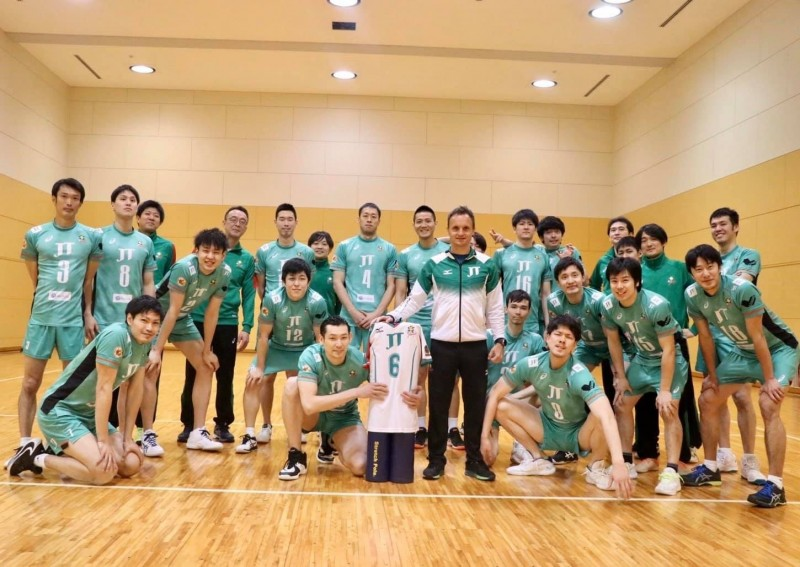

陳建禎為我國首位旅日的排球選手，他在旅外第2個球季加盟一級球隊松下黑豹，也嘗到冠軍滋味，不過隊上人才濟濟，他的發揮空間有限，讓他決定在這季轉戰JT 雷霆。
「今年幾乎打滿整季，信心提升很多，之前常被對手鎖定，在接發球上比較沒信心，這些情況都有改善。」
陳建禎這季獲得兩次單場最佳球員，達成自己季初設定的目標，也提升在場上的自信心。
日本當地疫情嚴峻，但陳建禎表示，自己大多時間都待在家裡、球場，偶爾去超市採買，影響不大也很安全，但感覺得出來街道上人較少，也沒什麼觀光客。
由於返台得居家檢疫，陳建禎表示，已提前麻煩家人準備訓練器材，還打算重新開始練鋼琴，「前次彈鋼琴是大學了，現在有空剛好可以練一下。」
他表示，小學時學了3、4年的鋼琴，但國中後加入校隊住校，沒辦法繼續練習。